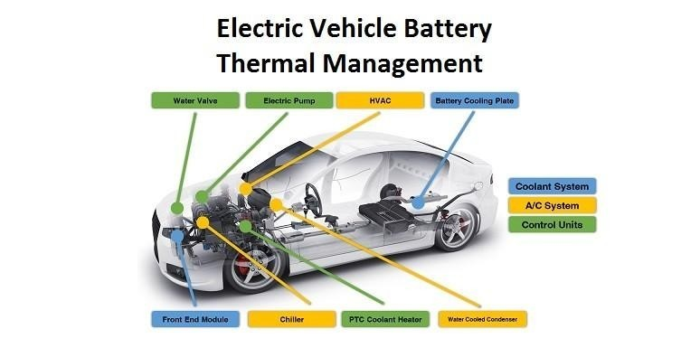
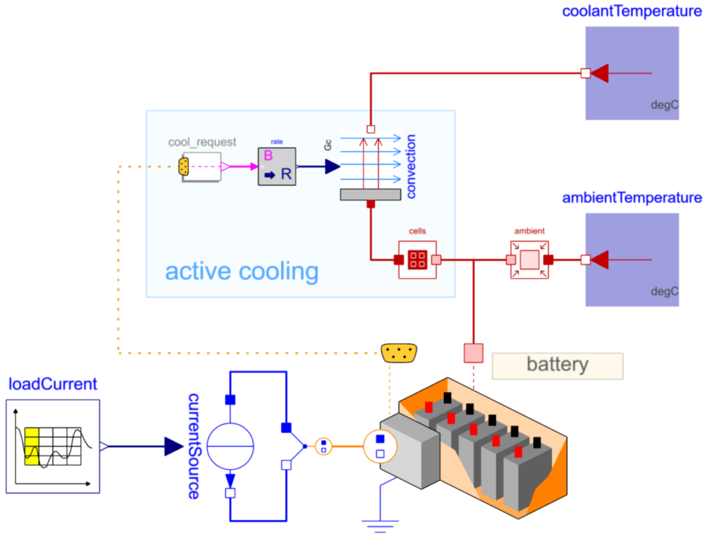
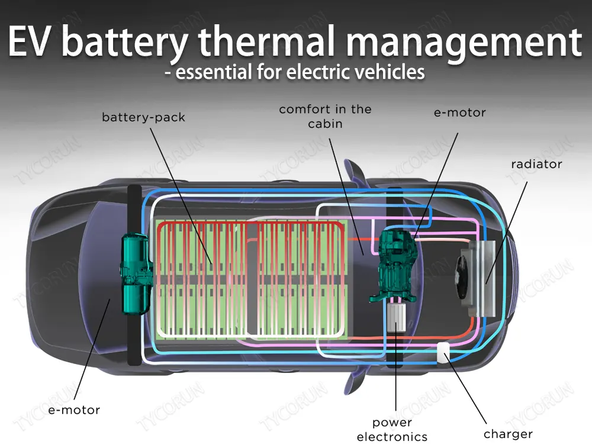

The increasing demand for electric vehicles (EVs) has highlighted the critical importance of efficient battery thermal management. The complex operating conditions of EVs, including high-current charging and discharging, coupled with varying ambient temperatures, can lead to significant temperature gradients within lithium-ion batteries.
These temperature variations can negatively impact battery performance, safety, and longevity. Therefore, effective thermal management strategies are essential to ensure optimal EV operation.

Challenges in Battery Thermal Management
- Heat Generation: The electrochemical processes involved in battery operation generate significant heat, particularly during high-current charging and discharging. This heat can lead to localized hotspots, which can accelerate aging and potentially cause thermal runaway.
- Temperature Sensitivity: Lithium-ion batteries are sensitive to temperature variations. High temperatures can degrade battery capacity and shorten lifespan, while low temperatures can reduce performance and increase internal resistance.
- Thermal Management Complexity: The compact design of EV battery packs and the need for efficient cooling present significant challenges in thermal management. Ensuring uniform temperature distribution across the entire battery pack is crucial to prevent performance imbalances and safety risks.

Thermal Management Techniques
- Air Cooling: Air cooling utilizes natural or forced convection to transfer heat from the battery to the surrounding environment. While simple and cost-effective, air cooling can be less efficient than liquid-based methods, especially in high-temperature conditions.
- Liquid Cooling: Liquid cooling systems employ a circulating coolant to absorb and transfer heat from the battery. This method offers higher heat transfer efficiency compared to air cooling and can be more suitable for high-performance EVs. Liquid cooling can be further categorized into direct contact and indirect contact systems.
- Phase Change Material (PCM) Cooling: PCMs absorb or release latent heat during phase transitions (e.g., solid to liquid), providing a highly efficient and uniform cooling solution. PCMs can be integrated into battery packs or used in external cooling units.
- Heat Pipe Cooling: Heat pipes utilize capillary action to transfer heat from a hot end to a cold end. This technology can be effective in managing localized hotspots within battery packs.
- Hybrid cooling: Hybrid systems combine multiple cooling techniques to leverage their respective advantages and address specific challenges. For example, a combination of liquid cooling and PCMs can provide high heat transfer capacity and thermal buffering.

Considerations for Thermal Management System Design
- Battery Chemistry and Configuration: The specific type of lithium-ion battery (e.g., lithium-iron-phosphate, lithium-nickel-cobalt-aluminum oxide) and its configuration (e.g., pouch cells, cylindrical cells) influence thermal management requirements.
- Operating Conditions: The expected operating environment, including ambient temperature, charging/discharging profile, and driving conditions, must be considered to determine the appropriate cooling capacity.
- Safety and Reliability: The thermal management system should prioritize safety by preventing thermal runaway and ensuring reliable operation under various conditions.
- Efficiency and Cost: The system should be designed to minimize energy consumption and maintain cost-effectiveness.
Conclusion
Effective battery thermal management is crucial for the safe and efficient operation of electric vehicles. By understanding the challenges and leveraging appropriate thermal management techniques, engineers can develop systems that optimize battery performance, extend battery life, and enhance overall EV reliability. As EV technology continues to advance, innovative thermal management solutions will play a vital role in shaping the future of electric transportation.